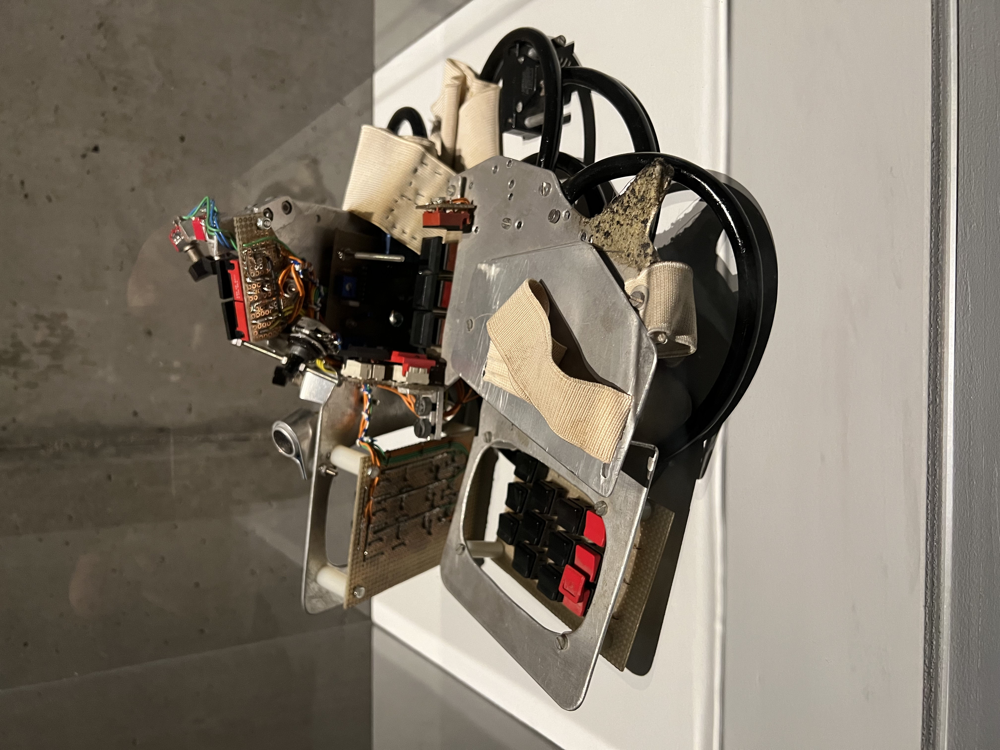

The Hands
Michel Waisvisz's hand-worn gestural MIDI controller — wooden frames, tilt sensors, and ultrasound

Overview
The Hands is a pair of hand-worn gestural MIDI controllers built by Michel Waisvisz at STEIM in 1984, one year after the MIDI standard was introduced. Each hand carries a wooden frame fitted with switches, potentiometers, tilt sensors, and ultrasonic rangefinders. The performer plays music through hand and arm movements, tilting gestures, and fingered playing — converting analog sensor data into digital MIDI data.
The instrument was conceived as a direct physical alternative to the keyboard-and-mouse paradigm of early electronic music. Waisvisz believed that 'touch is crucial in communicating with the new electronic performance art technologies' — the instrument's physicality was not a compromise but the point. The Hands went through multiple iterations at STEIM, evolving with sensor technology, and directly inspired the STEIM SensorLab (1989), a portable mini-computer that translates analog sensor data into MIDI code.
The Hands has been used by Waisvisz in countless performances and collaborations with artists including Laurie Anderson, Steve Lacy, and Peter Brötzmann. It is documented in the Computer Music Journal (Torre, Andersen, Baldé, 2016) and is preserved in photographs and video at the crackle.org archive. Four CC-licensed photographs exist on Wikimedia Commons.
Deep dive
The MIDI standard was published in 1983. Waisvisz began building The Hands in 1984 — almost immediately after the standard gave musicians a universal language for digital instrument control. The Hands is among the first instruments to use MIDI not as a note-and-velocity protocol for keyboards, but as a gestural translation layer: converting tilt, distance, finger pressure, and switch states into control change and note messages. The timing — 1984, the same year the Apple Macintosh introduced the mouse to the GUI — places The Hands at the birth of alternative computer input.
Each hand carried a wooden frame (not a glove — a rigid frame) with a specific sensor complement. The right hand typically carried ultrasonic rangefinders pointing outward, measuring distance to surfaces or to the other hand. Potentiometers on finger joints measured bend angle. Tilt switches detected orientation. Momentary switches under the fingers registered discrete presses. The left hand carried complementary sensors. Together, the two hands created a rich gestural vocabulary: bringing hands together changed pitch, tilting a hand modulated a filter, pressing a finger triggered a note. The frames were custom-built for Waisvisz's hands, making the instrument as personal as a bespoke suit.
The Hands was Waisvisz's proof-of-concept that gesture-to-MIDI translation was viable and musically expressive. By 1989, STEIM had generalized the approach into the SensorLab — a portable mini-computer running custom software that could translate any analog sensor input (from any source) into MIDI. The SensorLab was used by numerous visiting artists at STEIM, including Laetitia Sonami for her Lady's Glove (1991) and Jon Rose for his Hyperstring Project. The Hands thus stands at the root of a whole family of gestural instruments.
The Hands is a landmark in wearable input. It demonstrates that the body can be the interface, not just the operator of an interface. It predates the Power Glove (1989, Nintendo licensed from Abrams/Gentile Entertainment) by five years, and unlike the Power Glove — a consumer toy with limited gesture recognition — The Hands was a serious musical instrument with direct sensor-to-MIDI mapping. It anticipates the whole field of gesture-controlled computing, from Wii remotes to Leap Motion to Apple Vision Pro hand tracking.
Team & pioneers
- Michel Waisvisz. Inventor, performer, and artistic director of STEIM (1981-2008). Dutch composer and inventor of experimental electronic musical instruments including the Cracklebox (1978) and The Hands (1984).
- STEIM. Studio for Electro Instrumental Music, Amsterdam. Founded 1969 by Misha Mengelberg, Louis Andriessen, and others. Center for research and development of new musical instruments in electronic performing arts. Where The Hands was conceived, built, and performed.
- Frank Baldé. STEIM software developer (1986-2020). Developed the SensorLab software and later JunXion, the sensor-to-MIDI/OSC mapping tool. Collaborated with Waisvisz on multiple instruments.
Media
